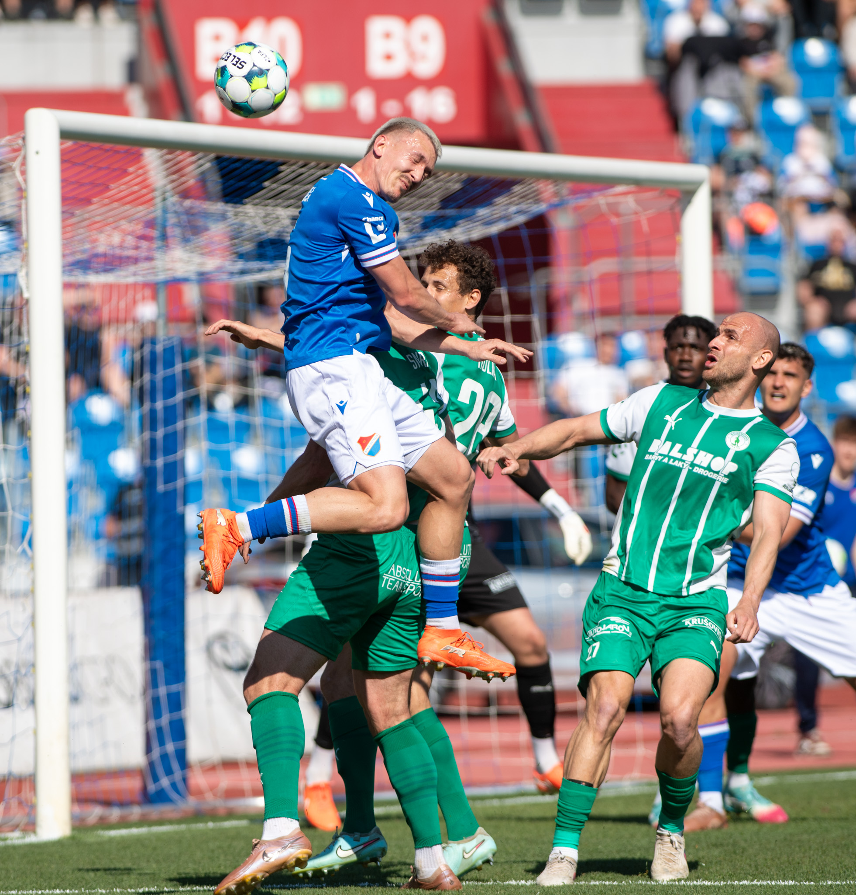

BANÍČEK
Věrnost • Tradice • Ostrava
OSTRAVA JE MODROBÍLÁ
Fanoušci Baníku Ostrava patří mezi nejvěrnější v celé republice. Tradice, emoce a atmosféra na stadionu tvoří nezapomenutelný zážitek. Baník není jen klub — Baník je životní styl.


